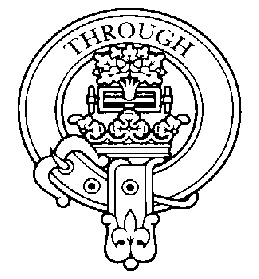
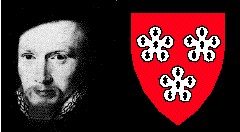
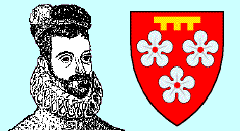

MauriceHamilton.com

A Hamilton History: |
|
A Synopsis by Maurice E. Hamilton |
A Hamilton surrendered Bothwell Castle to Robert the Bruce after the Battle of Bannockburn and was granted the Royal Barony of Cadzow. A Hamilton was heir to the Scottish throne and arranged the marriage between Mary Queen of Scots and the Dauphin of France. A Hamilton was proposed as husband for Queen Elizabeth of England--and proposed himself as husband for Queen Mary--but was judged insane. Hamiltons were lords, earls, marquesses, and dukes--wise and foolish--generous and greedy--killed in duels and battles and executed by hanging and decapitation.
On these pages, obscured by the passage of 700 years, is the history of the Clan Hamilton, starting with the first known Hamilton, Gilbert, in the 13th century.
To unveil our history, touch the shield.
The present shall be hidden, and the past revealed.
The Hamiltons who held Hambleton in Leicestershire and were later granted the Royal Barony of Cadzow probably immigrated to England from the Seine Valley in France, which they may have entered from Hainault in the south of present-day Belgium.
The earliest recorded Hamilton is Gilbert de Hameldun, a witness to a charter confirming the gift of the church at Cragyn to the Abbey of Paisley in 1271. According to one legend, Sir Hamilton expressed admiration for Robert the Bruce at the court of King Edward II in about 1323, upon which he was struck by John de Spencer (or one Dispenser). A duel followed and de Spencer fell. (Alternatively, de Spencer may have refused to fight and Hamilton killed him.) Hamilton fled towards Scotland, hotly pursued. Near the border, he and his esquire donned the dress of woodcutters and began working. As the soldiers passed, his esquire hesitated and, to divert attention, Hamilton called out "Throu," the traditional woodcutters' exclamation. They were not recognized, and Hamilton's life was saved. The Hamilton Coat of Arms commemorates this escape.
The son of Gilbert by Isabel was Sir Walter Fitz Gilbert de Hamildon (variously spelled Homildon, Hamildon, Hameldone, or Hambleton), an English knight who owned properties in Renfrewshire. The first recording of his name was as Walterus filius Gilberti in 1294, when he witnessed a Stewart charter granting the monastery of Paisley the right to fish for herring in the River Clyde. Fitz Gilbert swore loyalty to King Edward I in 1292 and again in 1296 for his estates in Lanarkshire and other counties and was Governor of Bothwell Castle for England during the early part of the Scottish Wars of Independence. After the Battle of Bannockburn in 1314--during which thirty thousand Scotsmen commanded by Bruce defeated 100,000 Englishmen led by Edward II and captured Stirling Castle--Walter Fitz Gilbert surrendered Bothwell Castle to Robert the Bruce . In appreciation of this support, Bruce knighted him and awarded him forfeited Comyn lands, including the properties of Cadzow in Lanarkshire. Here, in the area later named Hamilton, Fitz Gilbert built Cadzow Castle, and here his descendants would built magnificent Hamilton Palace and later Chatelherault. Fitz Gilbert first married Helen and then Mary, daughter of Sir Adam Gordon of Gordon, a union that produced his heir, Sir David Fitz Walter Fitz Gilbert, and John Fitz Walter.
At the Battle of Neville's Cross (also called the Battle of Durham) in 1346, the English captured Sir David, together with his namesake, David II, son of Robert the Bruce. Hamilton was released following payment of a handsome ransom. He married Margaret, daughter of William de Ross, and was succeeded by their eldest son, Sir David Fitz David Fitz Walter Fitz Gilbert de Hamyldon, Baron of Cadzow, who received additional grants of land from the King in 1375 and 1378. His eldest son, Sir John Hamilton of Cadzow, witness to a charter in 1392, was twice prisoner in England. He married Janet (Jacoba), daughter of Sir James Douglas, and was succeeded by their eldest son, Sir James Hamilton of Cadzow, who visited England as a prisoner in 1424 and 1426 as a hostage for the ransom of King James I from his English captivity.
Sir James Hamilton of Cadzow, the eldest son of James Hamilton and his wife Janet, daughter of Sir Alexander Livingston, was created a hereditary lord of parliament in 1445 and thereafter known as Lord Hamilton. Noted for his energy and wisdom, his opinions were highly valued in the national council and among his fellow barons. He surrendered all his lands and baronies for creation into a new lordship of Hamilton, the name decreed for the town of Cadzow by Royal Charter in 1445. Although Hamilton joined the confederacy which Douglas formed with the Earls of Crawford and Ross against the Crown, he subsequently changed his loyalty to King James II and helped suppress the revolt. For this he was rewarded with the office of Sheriff of Lanarkshire in 1455 and granted a new charter for his lands and baronies. His first wife, Euphemia, widow of the 5th Earl of Douglas, died in 1468. In 1474, he married Princess Mary Stewart, daughter of King James II, sister of James III, and widow of Thomas Boyd, Earl of Arran (a Gaelic-speaking island in the Forth of Clyde).
From this union was born in about 1475 James, 2nd Lord Hamilton. In 1490, at age 15, he married Elizabeth, the 13-year-old widow of Thomas Hay of Hoprew, Master of Yester, but is thought to have divorced her the following year on the grounds that the Master was actually alive. Sir James assisted with the arrangements for the marriage of his cousin James IV to Princess Margaret Tudor of England. As a reward, James IV granted him the Earldom of Arran and Brodick Castle on his wedding day in August 1503. James was appointed Admiral of the Scottish Fleet in 1513, Lord of Regency under the Duke of Albany in 1517, and he commanded the Royal army against the Earl of Lennox in 1526. He married Janet, widow of Sir Robert Livingston, in 1516.
Constantly feuding with the Douglases, represented by the Earl of Angus, the second husband of Queen Margaret, James was involved in the infamous "Clear the Causeway" skirmish, which occurred in the High Street of Edinburgh in 1520. The Hamiltons, who initiated the contest, were defeated and several of their chiefs and 70 of their men were killed. Arran escaped with difficulty through the North Loch.
One of the 7 known illegitimate children of James was Sir James Hamilton of Finnart, who was known for his considerable energy and was the principal architect of Scotland at that time. Sir James married Margaret Livingston, daughter of his father's new wife, and administered her lands to considerable personal advantage. King James V appointed him Cup-bearer and Steward of the Royal Household and Master of Works to the King. Under his supervision, the castles of Edinburgh, Stirling, and Blackness and the palace of Holyrood were enlarged and adorned. In appreciation of Hamilton's merits, the King bestowed on him several valuable estates, including the lands of Draphen in Lanarkshire. Here Sir James erected the formidable and stately castle of Craignethan. Sir James, however, had a passionate temper. He was the main instigator of the "Clear the Causeway" skirmish. More significantly, he murdered John Stuart, 12th Earl of Lennox, and participated in the persecution of the Protestants, including his cousin Patrick Hamilton, who was burnt at the stake in 1528. Accused of treason and embezzlement, he was found guilty and beheaded in 1540.
John Hamilton, Abbot of Paisley, Archbishop of St. Andrews and Primate of All Scotland, and also an illegitimate son of the Earl (legitimized in 1546), attempted to reform the Catholic Church and issued an English catechism. He was the principal opponent of John Knox after the murder of Cardinal Beaton. He baptized Queen Mary's son, the future King James VI, in 1566 and remained loyal to the Queen. However, for alleged complicity in the murders of Lord Darnley and the Regent Murray (the Queen's brother), Archbishop Hamilton was hanged, wearing his episcopal vestments, from the Bridge at Stirling in 1571 on the orders of the Regent Lennox.
James Hamilton, 2nd Earl of Arran, son of the first Earl by his second wife, was chosen Regent of the Kingdom and Guardian of little Queen Mary following the death of King James V and declared Heir Presumptive to the Crown in 1542 or 1543. In this capacity, James reportedly tried to arrange the marriage of Queen Mary to his son in order to secure the throne for his family. Ultimately, James arranged for the marriage of Mary to the Prince of France, the Dauphin, for which he was rewarded by the French King Henry II in 1548 or 1549 with the French Dukedom of Chatelherault in Poitou. Characterized by feebleness and fickleness, he vacillated between Catholicism and the Reformed church. Following the death of the Dauphin (then King Francis II), James openly opposed the marriage of the Queen to Henry Stuart (known to the English as Lord Darnley) and, as a consequence, was compelled to leave Scotland for 4 or 5 years. Mary would later wed her third husband, the Earl of Bothwell, the alleged mastermind behind the assassination of her second husband Lord Darnley. This scandal led to Mary's imprisonment at the island fortress on Loch Leven, where she was forced to abdicate. Upon James' return to Scotland, he remained close to Mary and hid her (and reportedly the crown jewels) at Cadzow Castle after she escaped from Loch Leven. Although James attempted to regain power, he was forced to submit to the authority of the Regent Murray, who imprisoned him at the Castle of Edinburgh. Here he helped plan the murder of the "Good Regent."
In 1575, James was succeeded by his eldest son James, 3rd Earl of Arran, Commander of the Scots Guards in France, who was proposed by the Lords of the Congregation as husband for Queen Elizabeth of England in 1560, and who proposed himself as husband for Mary, Queen of Scots, in 1561. He was judged insane in 1562, although it may be that he was only scatterbrained. James resigned the Earldom of Arran to James Stewart of Bothwelhaugh in 1581, but this was ruled by the Court of Session in 1586 to be "the act of a person incompetent in consequence of insanity," whereupon his honors were restored. His brother John, 4th Earl of Arran and 3rd Duke of Chatelherault, administered the estates and was given the Abbey of Arbroath in 1551. He became Chancellor of Scotland and Keeper of the castles at Sterling and Edinburgh and is the ancestor of the Dukes of Hamilton.
Can you identify this famous Hamilton?
 |
John Hamilton, 1st Marquess of Hamilton |
John was significantly influenced by his younger brother Claud. Although initially hostile to Mary, they later became devoted partisans. Claud escorted Mary to Hamilton Palace after her escape from Loch Leven and commanded Mary's vanguard in the Battle of Langslide in 1568. Lord Claud Hamilton was created a peer by King James VI and received from him a grant of the Barony of Paisley, followed by the gift of the rich Abbey of Paisley. He was created Lord Paisley on July 29, 1587, and is the ancestor of the Dukes of Abercorn (see below).
At the Pacification of Perth in 1573, the Hamiltons abandoned Mary's cause. A reconciliation with the Douglases was effected by the marriage of Lord John to Margaret, daughter of the 7th Lord Glamis, a cousin of the Regent Morton. However, in 1579, proceedings against the Hamiltons were resumed for the deaths of Regent Murray and Regent Lennox, who had been murdered in 1571. John and members of his family fled or were exiled to England, after which their titles and lands were seized by their opponents, and James Stuart became Earl of Arran. Claud sought intervention from Spain on behalf of Mary. John dissociated himself from the plot and returned to Scotland, where he formally reconciled with James VI, leading to restoration of the honors and estates of the family 1585. Claud returned the following year. Lord John became a favorite of King James VI, who created him 1st Marquess of Hamilton and Lord Evan in 1599.
His son John, 2nd Marquess of Hamilton, died at Whitehall at the age of 36, reportedly poisoned by the Duke of Buckingham.
James Hamilton, 3rd Marquess and 1st Duke of Hamilton, was appointed by King Charles I to command the fleet he sent against the Scottish Covenanters in 1639. On this occasion, the mother of the Marquess--a zealous Covenanter--appeared among the volunteers and pronounced that she would be the first to shoot her son if he should land and attack his countrymen. It was the Marquess, as High Commissioner, that Charles I entrusted with the task of convincing the Covenanters to abandon their League and Covenant in favor of supporting him in his contest with the English Parliament. Not only was Hamilton unable to dissuade the Covenanters to abandon their plan to replace the Episcopalian system with Presbyterianism, but the Covenanters sent an army to support those opposed to the King. Charles was so angered by the Marquess' ineptness that he incarcerated him at Pendennis Castle in Cornwall and later at St. Michael's Mount, where he remained until 1646. Upon his release from prison, James learned that Cromwell had imprisoned Charles. Apparently harboring no hostility over his recent imprisonment, he raised a Scottish army of 14,000 quickly recruited and poorly trained troops and marched into England with the purpose of restoring Charles as King. Instead, they were defeated by Cromwell's forces, and the Duke surrendered his army at Preston in 1648. Tried as Earl of Cambridge and an English subject on the charge of levying war against the English people, he was found guilty and beheaded in 1649, one month after King Charles.
James was succeeded by his brother William Hamilton, Earl of Lanark, 2nd Duke of Hamilton, and 4th Marquess of Hamilton, who with equal misfortune supported the Royal cause. Reputedly honest and intelligent, in contrast to his predecessors, he accompanied Charles II to Scotland in 1650 and joined the march into England, where he was mortally wounded at age 34 at the Battle of Worcester.
Neither James nor William left any male heirs, so the titles and estates of the family were transferred to Duchess Anne, the daughter of the 1st Duke. She married Lord William Douglas, who, at the restoration of the monarchy, was created Duke of Hamilton for the duration of his life. King James appointed him a privy counsellor and a Commissioner of the Treasury. However, he refused to support the dispensing power claimed by the King, and, upon the arrival of the Prince of Orange, he headed the delegation of Scottish noblemen and gentlemen who waited upon William at Whitehall. He was selected to be the leader of the Whig party and, after a keen contest, was elected President of the Convention at Edinburgh in 1689. The Convention declared that James had forfeited the throne, and, after the Convention was formed into a Parliament, Hamilton was appointed President of the Council and Lord High Admiral of Scotland and, in 1693, Lord High Commissioner to the Parliament.
William died in 1694 and was succeeded by his eldest son, James, 4th Duke of Hamilton, who was born in 1658. Educated at the University of Glasgow, James was appointed one of the Gentlemen of the Bedchamber of Charles II in 1679. He was nominated Ambassador Extraordinary to France in 1683 and served in two campaigns as aide-de-camp to the French King Louis XIV. Following the death of Charles II in 1685, King James appointed the Duke (then called Earl of Arran) Master of the Wardrobe and commander of the Royal Regiment of Horse.
During the Revolution, the Hamiltons had hedged their bets. Arran supported the restoration of the Stewart family and was twice confined to the Tower on suspicion of treason. On the other hand, his father, the Duke, supported the claims of King William, so that regardless of the outcome, the family titles and estates would be retained. However, on the death of the Duke in 1694, Arran received neither accession of title nor estate, since both were possessed by his mother. In 1698, the Duchess resigned the family dignities to King William, who then conferred them on Arran. He was created a British peer in 1711 by the titles of Duke of Brandon and Baron Dutton. The following year Duke James was appointed Master-General of the Ordnance and received the Order of the Garter in addition to the Order of the Thistle, which had been conferred on him by King James. He was killed in 1712 in a duel with the notorious Lord Mohun (whom he mortally wounded).
Fulfilling the "Grand Design" of Anne, 3rd Duchess of Hamilton, for the lands surrounding Hamilton Palace, James, 5th Duke of Hamilton, commissioned the well-known architect William Adam to design a hunting lodge for the estate. A site was selected on a hill adjacent to the medieval hunting forest near 12th century Cadzow Castle, and construction was started in 1732. Adam referred to it as the "dog kennels of Hamilton," and part of the building was in fact used for kennels and stables. Hamilton called it Chatelherault, after the dukedom.
The 10th Duke of Hamilton, Alexander, "Il Magnifico," was Ambassador to Russia. He completed the enlargements at Hamilton Palace and filled it with priceless art and furniture . He demolished the old medieval collegiate church, except for a transept that was the Hamilton family burial vault, and initiated the construction of the Hamilton Mausoleum, where he reinterred the Hamilton ancestors--which he considered to be the royal family of Scotland.
In 1845, his son William Alexander Anthony Archibald, the 11th Duke of Hamilton and 8th Duke of Brandon, married Princess Marie of Baden. She was the daughter of a cousin of Napoleon III, from whom Hamilton obtained recognition of his right to the title Duke of Chatelherault, conferred on the Regent Arran in 1548. Duke William died in 1863 at the age of 52 after falling down the stairs of a hotel in Paris.
He was succeeded by William Alexander Louis Stephen, 12th Duke of Hamilton, who was born in 1845. When he came of age, it was said that there are few positions in life more influential and more desirable than that which is occupied by the youthful heir of the house of Hamilton. The head of the most illustrious of our historic families, whose origin is hid in the mists of antiquity, and whose deeds are interwoven with the most momentous events in the history of our country; the possessor of the highest rank and of titles unrivalled as regards both their number and their renown--a triple dukedom, a triple marquisate, four earldoms, and seven baronies; premier peer of Scotland, male heir of the 'doughty Douglases,' the representative in the female line of the 'princely Hamiltons'--at one time the heirs, after the Stewarts, to the Scottish crown--owner of their vast estates extending over four counties, situated for the most part in the richest districts of the kingdom, and yielding a rental of 157,602 pounds a year.
Angus Douglas Hamilton, the 15th Duke of Hamilton, is currently the Premier Duke of Scotland and Hereditary Keeper of the Palace of Holyroodhouse.
Dukes of Abercorn
Recognize any "Hamilton" features?
 |
Lord Claud Hamilton, Lord Paisley |
The Duke of Abercorn is the head of perhaps the most influential branch of the ducal family. Its founder, Lord Claud Hamilton, son of the 2nd Earl of Arran and Duke of Chatelherault, received from James VI the Barony of Paisley, from which he derived his title of Baron Paisley, as noted previously.
Lord Paisley was succeeded by his eldest son James Hamilton, who was created the Earl of Abercorn by King James. In 1634, Claud Hamilton, a younger brother of the Earl, was created Lord Hamilton and, in the peerage of Ireland, Baron of Strabane by Charles I. Claud, the 4th Earl of Abercorn, supported James after the Revolution in 1688 and accompanied him when he went from France to Ireland. After the defeat of James at the battle of the Boyne, the Earl departed with him to France but lost his life during the voyage. He was attainted and his estates were forfeited for his adherence to the Jacobite cause. However, his brother, Charles, who succeeded him in his Earldom, obtained a reversal of the attainder. On his death the titles and estates passed to Captain James Hamilton, who abandoned the cause of King James when it became apparent that it would lose. He was created Baron Mountcastle and Viscount Strabane, and lucrative offices--civil, military, and ecclesiastical--were bestowed upon his family.
The Heir Male of the Hamiltons is James Hamilton, 5th Duke of Abercorn in the peerage of Ireland, 6th Marquess of Abercorn in the peerage of Great Britain, and 14th Earl of Abercorn in the peerage of Scotland. He was born in 1934 and married Alexandra Anastasia in 1966. They have two sons, James Harold Charles Hamilton, Viscount Strabane, and Lord Nicholas Edward Claud Hamilton, and one daughter, Lady Sophia Alexandra Hamilton.
Notice: The information on this site has been derived from a variety of sources and is believed by the author to be reasonably accurate. Corrections or clarifications from our readers are welcome.
The author has a special interest in the ancestors of Robert Hamilton, born 26 May 1760 to Robert and Jane Hamilton at Banbridge, Northern Ireland, and would be grateful for relevant information.
Readers desiring further information on their Hamilton ancestors may wish to visit our links. The author does not possess additional information on the history of the Clan Hamilton and is therefore unable to answer individual questions regarding the ancestors of our readers.
Clan Hamilton Home
| Maurice Hamilton Photography
| MauriceHamilton Home

{kind=link}